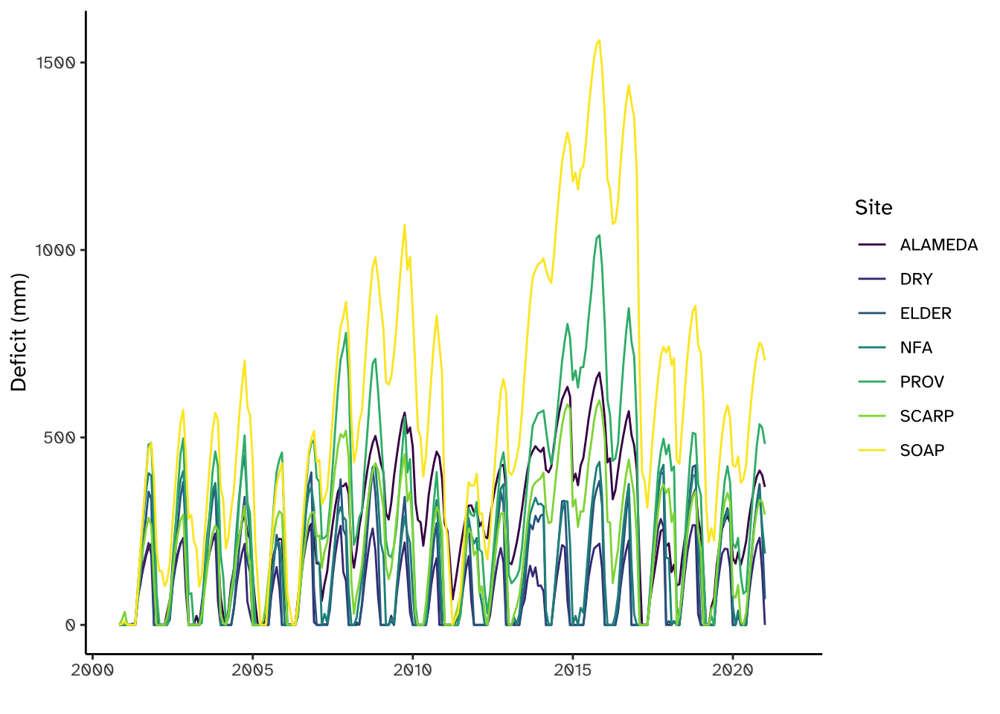
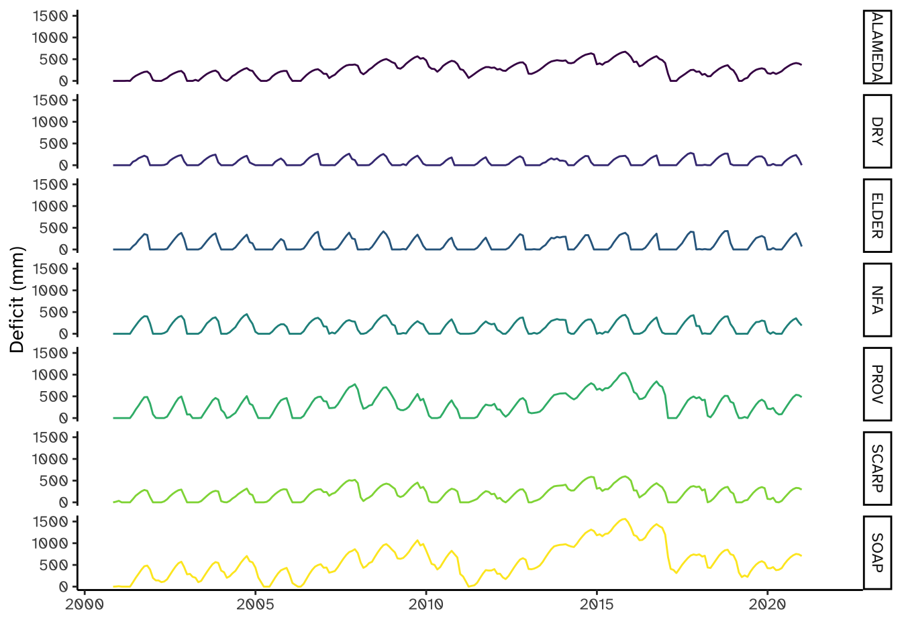

Drought Deficit
Drought Subsurface Deficit Analysis
Based on Dralle et al (numerous) papers.
Code
Code is based on this analysis in python.
!pip install -q geopandas
%matplotlib inline
import os
import geopandas as gp
import sys
import seaborn as sns
from matplotlib import pyplot as plt
import numpy as np
from google.colab import files
import pandas as pd
import scipy
import glob
import datetime
from shapely.geometry import Point
import requests
import ee
from google.colab import files
from shapely.geometry import Polygon, MultiPolygon
import ee
%config InlineBackend.figure_format = 'retina'
ee.Authenticate()Sites
As a test, we used the following locations:
- PROV = -119.188446,37.063012
- ELDER = -123.630644,39.723181
- ALAMEDA = -121.79203, 37.50237
- SCARP = -121.26971, 35.82157
- NFA = -120.92493, 39.10509
These represent a number of different Coastal and Sierran Rivers.
Plotting Deficit
Here we quickly plot these sites:
# make a tibble
sites <- tibble(sites=c("PROV", "ELDER","ALAMEDA", "SCARP","NFA"),
lon = c(-119.188446, -123.630644,-121.79203,-121.26971,-120.92493),
lat = c(37.063012, 39.723181, 37.50237, 35.82157, 39.10509))
# make sf
sites_sf <- sites %>%
st_as_sf(coords=c("lon","lat"), remove=FALSE, crs=4326)
mapview(sites_sf, zcol="sites")Deficit Data
These data were calculated for 2001-2021.
And plot!
Warning: Removed 63 rows containing missing values (`geom_line()`).
Warning: Removed 63 rows containing missing values (`geom_line()`).